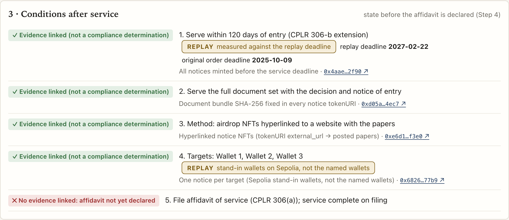
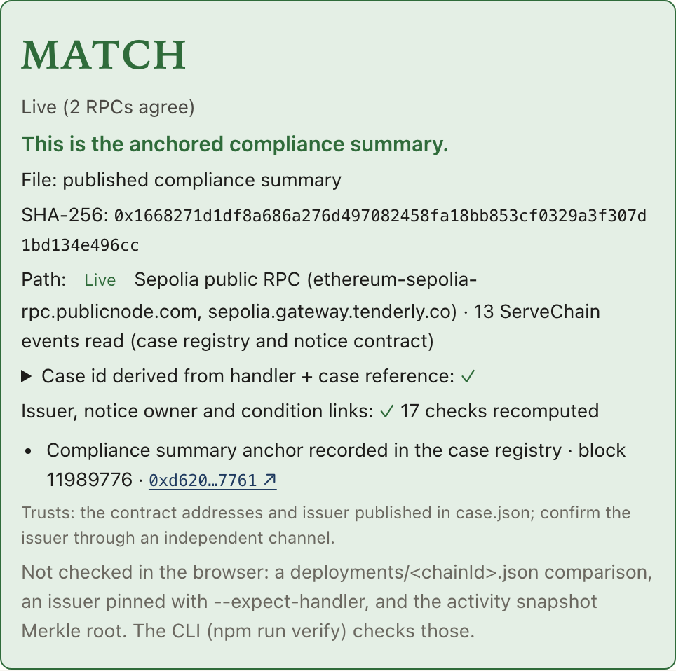
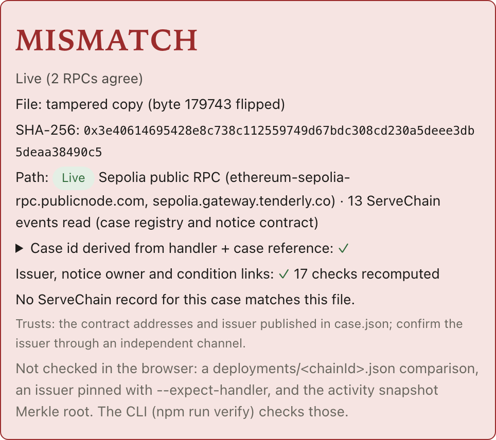

“ORDERED, that plaintiff shall serve the summons, complaint, … together with a copy of this Decision and Order with Notice of Entry, upon defendants, within 120 days of the date of entry, by airdropping NFTs hyperlinked to a website containing copies of said pleadings to digital wallet addresses 0xD764…0B7d (Wallet 1), TCfr…1ss8 (Wallet 2), and TDvR…Ztmu (Wallet 3)” … “plaintiff shall file an affidavit of service … and service shall be deemed complete upon such filing.” Sup. Ct. N.Y., Queens County, Index No. 700647/2025 (Lin, J.), order signed June 9, 2025, p. 6 · public record at ag.ny.gov
Some courts have ordered service by NFT. Proving you complied with the order is still manual. ServeChain does both: serve, then build a verifiable case file.
Replay of a public New York Attorney General case; the author is not a party to it.
Trial-level orders, not appellate rulings (this 2025 order was unopposed).
Five conditions: a 120-day window, a specific document set, a specific method, three named wallets, and a filed affidavit. The response clock starts at filing. Counsel must show each condition was met; a gap can be raised against a default judgment.
Source: decision pp. 4-5; intern affirmation pp. 69-72 and exhibit p. 78; OAG memo p. 64 (LCX), all in the public PDF.
Real defendant wallet activity, read only, beside the contact attempts the court relied on.
The order becomes a checklist with exact quotes and page numbers. Its hash is fixed on-chain.
Hash the papers, mint one soulbound (non-transferable) notice per wallet per condition with that hash in tokenURI, link each tx to a condition.
Filing is recorded once every service condition has evidence; + 30 days (CPLR 320(a) / 3012(c)). Shown as a New York calendar date, an estimate.
One compliance summary PDF (attachment for counsel), A to C. Its hash is anchored. Browser or CLI says MATCH or MISMATCH.
ServiceNotice721: non-transferable notice, papers hash fixed at mint.CaseFileRegistry: conditions, evidence, deadline, snapshot.
Unattributed NFTs seen on the three real wallets on July 30, 2025 are shown as context only, not linked to any condition. ServeChain did not send them.
Writes only on anvil (31337) and Sepolia (11155111), to labelled stand-in wallets. Real wallets are read only.
The order names two TRON wallets; this tool writes only to EVM chains, so in this replay they are served on Sepolia stand-ins.

Step 3 · after minting, condition 5 shows "No evidence linked" until the affidavit is declared in Step 4. Replay badges mark the deadline, stand-in targets and the on-chain affidavit record.
Step 5 (right) · the published compliance summary matches the hash anchored on Sepolia; a copy with one byte flipped does not.


The wallet address is the only known contact point, and some courts have ordered service by token or NFT airdrop. ServeChain's notice fixes the SHA-256 of the papers inside the token, so it shows what was served, not only that a token arrived.
Saved webpages and spreadsheets can be edited later. Evidence hashes, the declared filing time and the compliance summary hash on-chain mean the filer cannot quietly change their own record, and the other side can check it against the chain. No server of ours is needed to read it.
On-chain gives public reading, ordering and a non-transferable service NFT. It does not prove the facts behind a record, and a proof of time alone could come from an RFC 3161 timestamp. Courts still read explorers and affidavits; ServeChain organizes that proof, it does not replace it.
declaredFiledAt is entered by the filer. The chain cannot prove the court filing date.Digital-asset fraud and recovery cases where the only known contact point is a wallet address.
For example a state Attorney General's office, as in the case replayed here.
Estates pursuing transfers to unidentified wallets.
Hypothesis: a per-case fee for counsel, or a tool licensed to process-serving firms.
No lawyer review or user interviews yet. Next step: practitioner interviews (not yet done) to test the workflow and the pricing.
Two of the three wallets in this case are on TRON. Mint the same hash-locked notice there.
Rule sets beyond New York CPLR, such as service abroad by other means ordered by the court (FRCP 4(f)(3)), kept in one rules file with sources.
Apply day-counting and roll-forward rules once read from the source, with the rule shown next to every date.
Attach the e-filing confirmation to the affidavit record so the filing time no longer rests on the filer's word alone.
Link the registry to the notice contract on-chain, so service evidence no longer depends on the scripts recording each notice.
How wallet-only defendants are served under the Civil Procedure Act (e.g. service by publication, Art. 194) is not yet analysed.
Open source (MIT). Reproduce with forge test, npm test, npm run demo:local, npm run verify.
Solo builder. Strategic planning in financial services.
I'm going through a lawsuit myself, and the procedural side, serving papers and keeping deadlines straight, felt more fragile than it should. ServeChain started from that.
Everything here was built for this hackathon: two Solidity contracts, a scripted demo on anvil and Sepolia, a compliance summary builder, and a browser and CLI verifier.
| Live demo | kimsabin725.github.io/servechain |
| Video | https://youtu.be/58pzpLuhmQc |
| Code | github.com/kimsabin725/servechain |
| Registry | 0xB2a0…1Ac2 (Sepolia) |
| Notice NFT | 0xA7bA…4001 (Sepolia) |